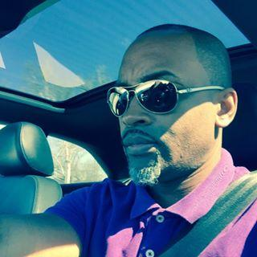

About Me
I am a Computer Science graduate from the University of North Texas, looking to make my professional entry into the world of development. I recently enrolled in a coding bootcamp offered by Southern Methodist University, and am super excited to embark on my journey to become a full-stack developer.
I have a solid foundation in various web development languages, such as HTML, CSS and Javascript, and have been exposed to jQuery, PHP and other frameworks, in addition to back-end technologies.
I am detail-oriented and self-driven, which results to me being my biggest critic. I am aware of my capabilities and am not afraid to learn from failure or humility. I want my work to represent my character in the best way possible.